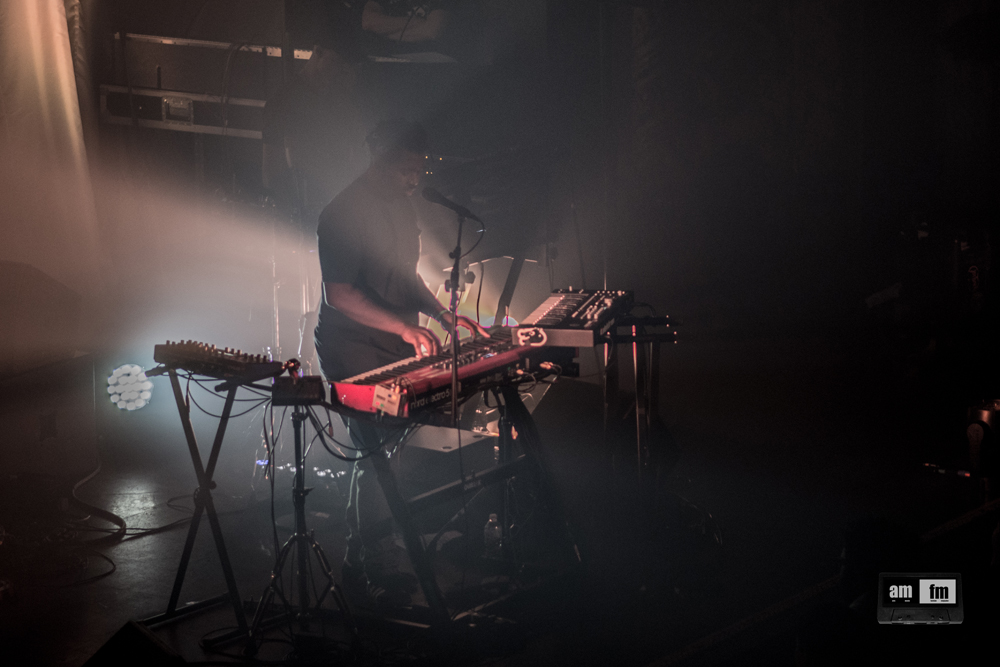
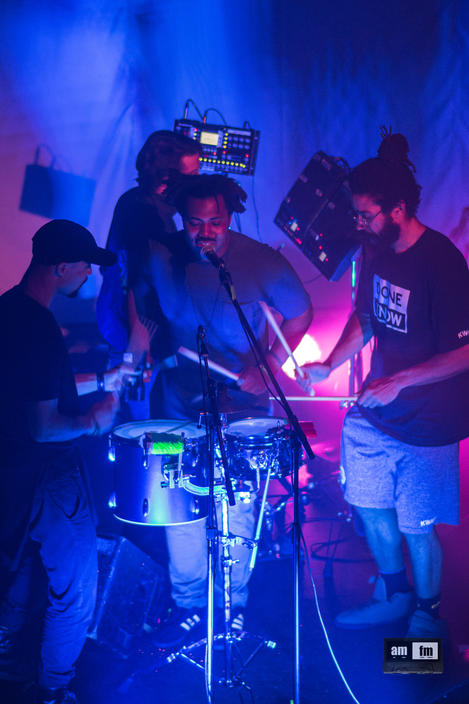
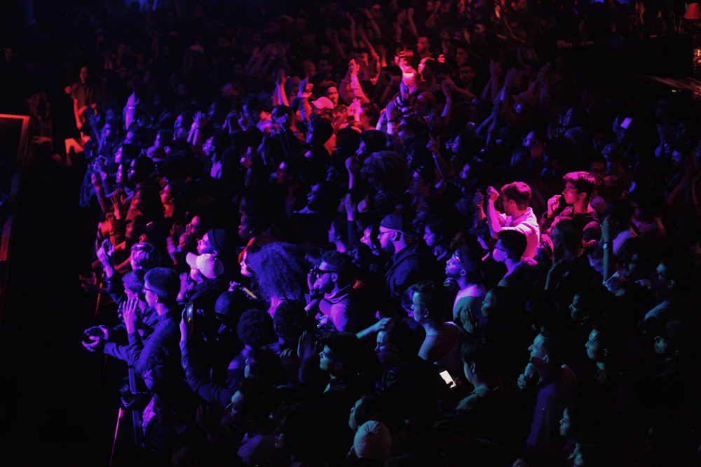

REVIEW: SAMPHA, NONAME & SANGO @ METRO CHICAGO
February kicked off with a musical bang at Metro Chicago, with three hard hitting sold out shows back to back. Metro is always known for it’s great and eclectic taste in music booking, so it was no surprise that we found ourselves at three amazing shows, within a two week span, London’s Sampha, Chicago’s very own Noname, and Seattle’s Sango.
Sampha, fresh off of a his debut record release, Process, made his Chicago debut on Feb 6th, with the most intimate set that you could have in a room packed full of people. The opener Mal Devisa set the tone, with her soft and the molasses like richness of her voice. The two complemented each other’s tone’s quite well. When Sampha took the stage it was like a call to attention. He opened the show with the opening track of his album, “Plastic 100°C,” beginning with the soft piano, almost lullaby like, his soothing voice centering in the midst of a crowd of chaos. The lighting mimicked the lights of heaven shining down, so bright at times you could not make out the difference between the glow and Sampha.

The crowd was quiet, yet intrigued and present. It was almost like being at the theater or an orchestral concert, especially in a theater like Metro, and at the way the crowd listened and clapped after each song it felt like a musical work of art was just witnessed. He played with sound in his signature way with the manipulation of his voice in songs like “Timmy’s Prayer,” and later in his set with “Kora Sings” and sound bites from the synthesizer, and his band mates with the live drums paired with the drum pad.
He, unlike most artists, played his most widely known song, “Too Much” quite early in the set, and of course everyone sung along, and loved it. Some folks in the room may clearly just know him from that song alone, or his cameo in Solange’s A Seat at the Table. They left knowing Sampha a bit more though, the focus was really on the debut project and Process. “Blood on Me” was a another crowd favorite, with its upbeat, grandeur sound and feel, and the percussive and piano repetition.

It’s easy to see why no one knows Sampha quite like the piano, which was his “last song” before thanking the crowd humbly. He did come back for quite the epic encore, after the crowd began to chant “Sampha, Sampha.” He and his band mates circled around one drum, each with a stick in hand, and each played “Without” like a pack, acapella, before going fully into the song.
Noname needed two days to perform in her hometown - two sold out nights, on the entirely sold out Telefone tour that she was about to embark on. Opening for her were also Chicago favorite rising songstresses Akenya, and Rayvn Lenae, who were also joining her on tour, and later did on stage as well.
The set mimicked a living room, where friends or family gathers to “shoot the shit,” a telefone, and a table and chairs placed with a bottle of Hennessy resting on top. If you went to the show on day two, it was the same show, but had a very different feeling and meaning because it followed the announcement of the loss of John Walt, one of Chicago’s own rappers from PivotGang and friend of Noname.
She perfrmed Telefone in it’s entirety, her most notable songs being her most popular “Diddy Bop” and “Yesterday” her flow so effortless it was as easy as talking. Everyone knew all of the words to what appeared to be every song at this all ages show. To many, Noname is a Chicago icon already, but she is definitely still the girl next door in her school dress skirt and white tennis shoes.
She definitely reached icon status when she did a wardrobe change into a red silky, sequined cape with her name on back and shades on singing R-Kelly’s cult classic with Mr. Isley, “Trapped in the Closet,” and the crowd lost it. Rayvn Lenae, who had played earlier came out again for her “Forever,” her song with Noname. Mick Jenkins made an appearance on, this time rapping alongside her, and sitting in the chair for a moment as he sipped from the bottle, watching, like the audience, with that Chicago pride.

DJ and Producer, Sango is no stranger to Chicago, nor is he a stranger to working with some of Chicago’s current star musicians like Smino and Jean Deaux, who he has collaborated with on some occasion. His current tour precedes the release of his latest project to release in Spring, In Comfort Of, a sort of coming of age second release for the Soulection DJ.
Coming from a past of musical influences like his way of juxtaposing Brazilian dance music with hip hop, the show was a mass of moving bodies. Chicago’s Stefan Ponce, and Monte Booker, opened the crowd, who in their own regard know how to get a crowd moving, it was a wonderful build up to the climax. Ponce alone played for almost three hours straight. Sango at times couldn’t resist coming out on stage to feel the music of his preceding acts more. Smino made a cameo during Booker’s set for “Colors,” before they finally passed the decks.

The set stretched into the night, and Sango did not disappoint. He brought it all to the decks, showing just how much he has grown this year. He has been doing a lot of press prepping for the release of his upcoming album. This is definitely his year to shine, and show just the type of technical genius that comes with production.